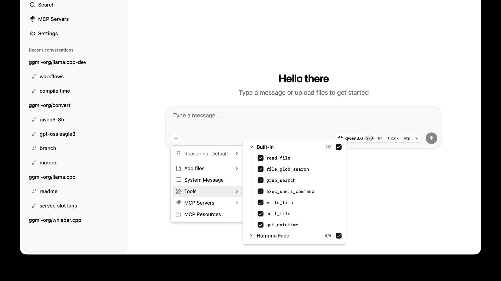

13 ноября 2026 года команда ggml-org (сейчас под крылом Hugging Face) выпустила llama.cpp v1.0.0 и параллельно v1.0.0 для базовой тензорной библиотеки ggml. Повод для релиза не косметический: миллиарды устройств — от ноутбуков до телефонов — запускают локальные модели именно через libllama и libggml, и на эти интерфейсы опирается огромное количество сторонних приложений.
Главное изменение — не код, а правила. Проект переходит на строгое семантическое версионирование: MAJOR-версия повышается только при ломающих изменениях публичного C API, MINOR — при обратно совместимых новых функциях, бэкендах и поддержках моделей, PATCH — только на исправления багов. Практический смысл: приложения вроде Ollama, LM Studio и сотен других теперь могут заранее знать, ждёт ли их сборка сюрприз. Официальные релизы обязаны содержать идентичную копию ggml, чтобы системные установки не конфликтовали.
К версии 1.0.0 llama.cpp поддерживает более 150 вариантов архитектур моделей и все основные методы спекулятивного декодирования. Движок ggml собирает отдельные бэкенды как динамические библиотеки, которые подгружаются во время работы, — железо под это дают NVIDIA, AMD, Qualcomm, Arm, IBM и Intel. Каналы поставки тоже выросли: готовые сборки для Linux, macOS, Windows, Android и iOS, Docker, Debian, Homebrew, conda-forge, MacPorts, Winget и XCFramework.
Для канала llama.cpp — фундамент всей волны локального ИИ: приватный запуск моделей без облака, офлайн-ассистенты, кастомные «модели в чемодане». Фиксация API означает, что экосистема перестала быть экспериментом энтузиастов и стала инфраструктурой, на которую можно строить продукты с долгим жизненным циклом. Отдельно отмечу: в разработке сами команды всё активнее используют ИИ-ассистентов, но под строгим контролем мейнтейнеров — как и положено, когда на библиотеке держатся чужие продукты.